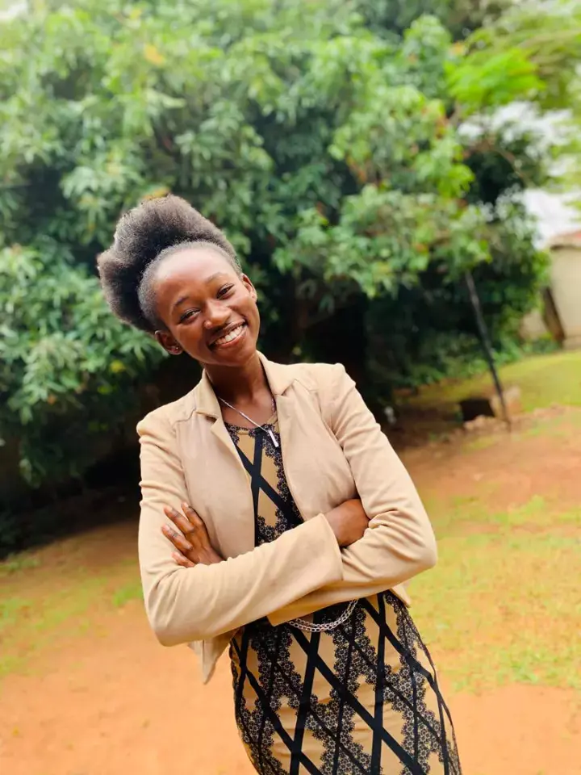

Nabugobero Devine Phoebe
About Me

Hello! I'm Nabugobero Devine Phoebe and a member of the church of Jesus Christ of Latter-day Saints. I am a passionate web developer with a love for creating beautiful and functional websites. I have experience in HTML, CSS, and JavaScript, and I'm always eager to learn new technologies. I am pursuing a degree in software engineering at BYU-IDAHO and I am passionate about building responsive and user-friendly web applications. I am also interested in mobile app development and UI/UX design. In time to come, I hope to contribute to open-source projects and collaborate with other developers to build innovative web applications. and I am also planning to go on mission for the Church of Jesus Christ of Latter-day Saints as my first priority and also get endowment.I am also planning to study abroad in the future and also become a Billionier in the time to come. I serve as a music leader in my ward and I love serving others. My hobbies include singing, writing poems , and playing the piano. I enjoy travelling and exploring new places with friends and families. My bestfriend is cool, crazy, understanding and I love her very much. My family is my strength and I am grateful for their support. Mom being the best part that has ever happened to me, Dad being the best father I could ever ask for. And my grandmother is the best grandmother I could ever have indeed she's my 1st Favorite. My siblings being my other safe place and I love them very much. My boyfriend is the nicest person I know and I don't regret choosing him. My grandfather being the best grandfather I could ever have and I am very grateful for his love and guidance. In the time to come, I hope to be a successful software engineer and make a positive impact in the world and also be a powerful Cardiologist
Course Resources

Here are some useful resources for our WDD 131 - Dynamic Web Fundamentals class: